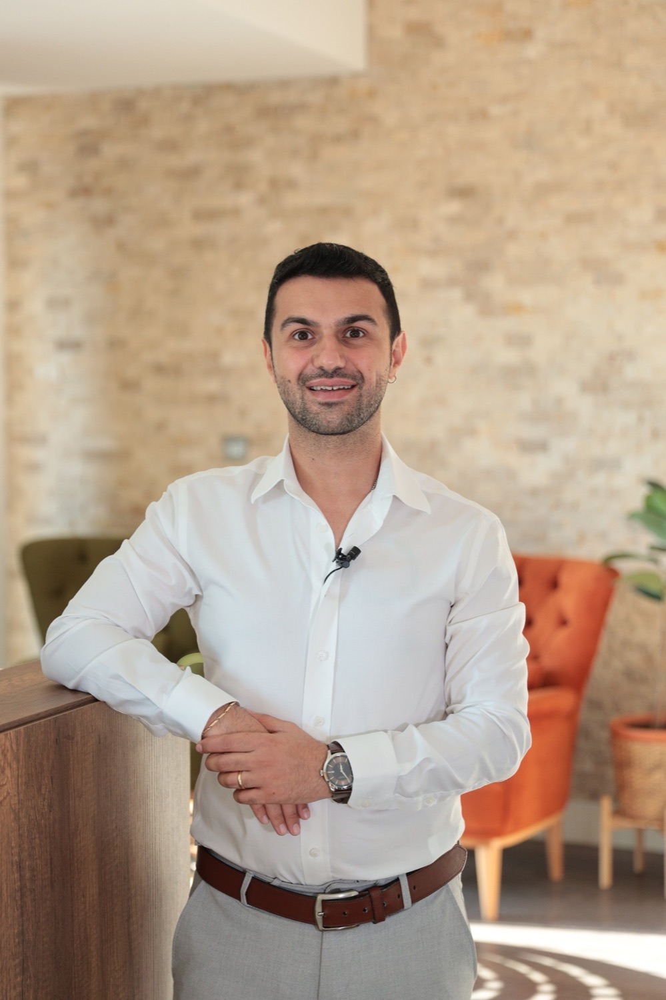
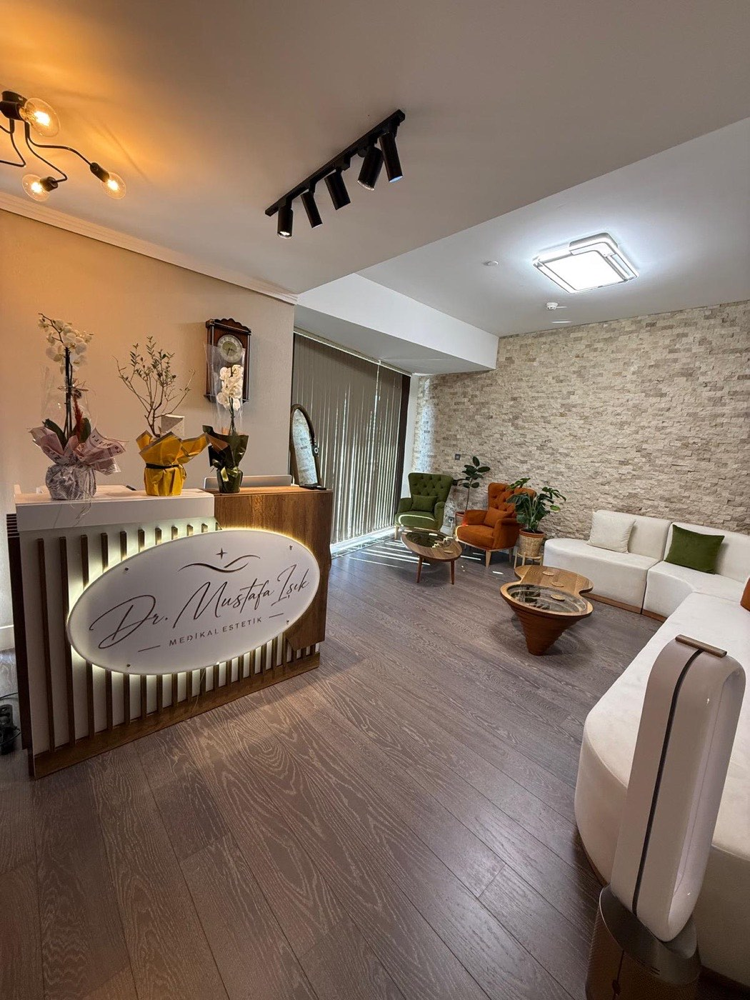

Yüzünüzü değil, yüzünüzün dengesini yenileyin.
Dr. Mustafa Işık, medikal estetik hekimi. Her plan; yüz anatomisi, mimik yapısı ve cilt kalitesinin değerlendirilmesiyle başlar. Amaç kişiyi değiştirmek değil, doğal ifadeyi koruyarak dengeli bir görünüm.

Yüzün bütünü, birlikte.
Her uygulama, yüz yüze hekim değerlendirmesinden sonra planlanır. Ayrıntılar için bir karta dokunun.
Neyi değerlendirmek istersiniz?
Aklınızdakileri seçin; ilgili uygulamaları görün ve notlarınızı muayeneden önce WhatsApp’tan iletin. Size uygun plan muayenede belirlenir.

Dr. Mustafa Işık
Uludağ Üniversitesi Tıp Fakültesi’nden mezun olduktan ve devlet hizmet yükümlülüğünü tamamladıktan sonra İstanbul’da medikal estetik alanında çalışmaya başladı; ulusal ve uluslararası eğitim ve kongrelerle mesleki gelişimini sürdürüyor.
“Yaklaşımımın temelinde, kişiyi değiştirmek yerine yüz hatlarını ve doğal ifadesini koruyarak daha dinlenmiş, dengeli ve taze bir görünüm elde etmek yer alıyor.”
- 1992Elazığ’da doğduİlköğretim ve lise öğrenimini Elazığ’da tamamladı.
- 2010–2017Uludağ Üniversitesi Tıp FakültesiBursa’da tıp eğitimi.
- Devlet hizmetiAdıyaman Sincik İlçe Devlet HastanesiDevlet hizmet yükümlülüğünü tamamladı.
- İstanbulMedikal estetikİstanbul’daki medikal estetik kliniklerinde deneyim kazandı.
- BugünAkasya’daki kliniğiAcıbadem, Üsküdar.
Değerlendirmeden uygulamaya
İhtiyacın değerlendirilmesi
Yüz anatomisi, mimik hareketleri, doku yapısı ve beklentiler birlikte ele alınır.
Kişiye özel planlama
Uygun bölge, yöntem ve işlem kapsamı kişinin ihtiyacına göre belirlenir.
Ölçülü uygulama
Doğal yüz oranlarını korumaya odaklanan ölçülü bir uygulama yaklaşımı izlenir.
Akasya’da sakin bir klinik
Sıcak bir bekleme alanı, özel uygulama odaları ve şehre bakan bir teras.
Gelmeden önce
Nasıl randevu alabilirim?
WhatsApp’tan yazabilir ya da 0540 040 53 23’ü arayabilirsiniz. Klinik pazartesi–cumartesi 10.00–19.00 arası açıktır.
Uygulama öncesi muayene yapılıyor mu?
Evet. Size hangi uygulamanın uygun olduğu, ya da uygun olup olmadığı, ancak yüz yüze hekim değerlendirmesinden sonra belirlenir.
Sonuçlar herkes için aynı mı?
Hayır. Sonuçlar ve süreleri, kullanılan yönteme, ürüne ve kişisel özelliklere göre değişiklik gösterir.
Uygulama öncesi nelere dikkat etmeliyim?
Kan sulandırıcı ilaçlar, aspirin ve bitki çaylarına ara verilmesi gerekebilir; bunu yalnızca hekim yönlendirmesiyle yapın. Kullandığınız ilaçları ve sağlık geçmişinizi muayenede paylaşın.
Klinik nerede?
Acıbadem, Derin Sokak, Akasya AVM B2 Blok girişi, İç Kapı No:26, Kat:2, Üsküdar/İstanbul.